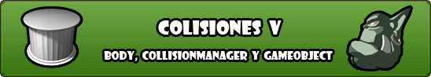
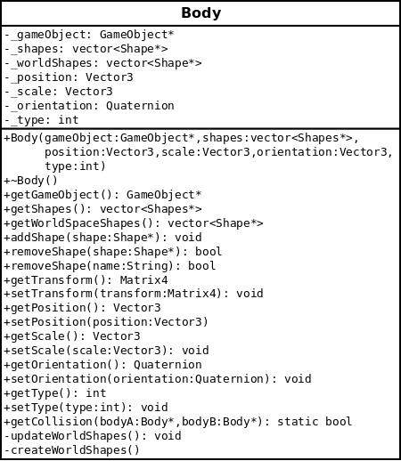
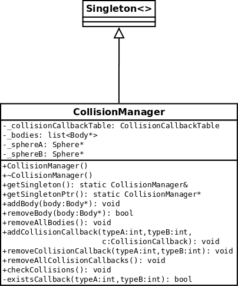
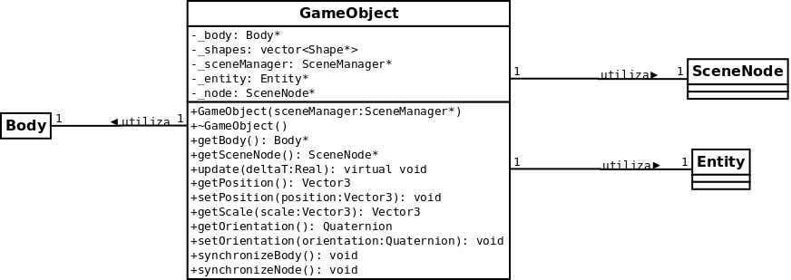

Colisiones V: Body, CollisionManager y GameObject
Feb 17, 2011 · 3 minute read · CommentsGames development

Entregas
- Colisiones I: Introducción, requisitos y alternativas
- Colisiones II: Diseño general de STC
- Colisiones III: Shape y Collision Dispatching
- Colisiones IV: Tests de colisión
- Colisiones V: Body, CollisionManager y GameObject
Esta es la quinta y última entrega de la serie de artículos sobre el sistema de detección de colisiones de Sion Tower (STC). Trataremos las últimas clases que nos queda por ver: Body, CollisionManager y GameObject. Finalmente hablaré de las correcciones y mejoras que implementaré lo antes posible de cara a una futura versión.
La clase Body
Un Body representa la parte colisionable de un objeto y está formado por un vector de formas (Shape) y una transformación (traslación con respecto al origen, escala y rotación). Los cuerpos tienen un tipo (entero) que permite agruparlos y filtrarlos en la detección de colisiones. Para manejar las colisiones entre dos cuerpos, debemos cruzar las formas de ambos en coordenadas del mundo, en ningún caso locales al objeto. Aplicar la transformación de cada cuerpo a cada forma en todas las iteraciones del bucle de juego es demasiado costoso. Por ello, he decidido almacenar un segundo vector de formas en coordenadas del mundo, en el eterno dilema de la eficiencia tempo/memoria ha ganado el tiempo en este caso.

¿Por qué no tener un sólo vector de formas en coordenadas del mundo? En la carga de niveles utilizaré una fábrica que guardará instancias de objetos como muros, mobiliario y otros elementos. Necesitaré copiarlos y por eso es más cómodo emplear coordenadas locales y luego transformarlas una sola vez.
La clase CollisionManager
El gestor de colisiones sigue el patrón de diseño Singleton y lleva el registro de todos los cuerpos colisionables de la escena. Es posible añadir o eliminar cuerpos según nos convenga. Una vez en cada iteración del bucle de juego es recomendable llamar al método checkCollisions.
Sólo se comprobarán colisiones entre cuerpos para cuyo tipo exista un callback. Los callbacks son objetos función de Boost que reciben dos punteros a Body y no devuelven nada. Utilizando boost:bind podemos crear un objeto boost:function y añadir el callback para dos cuerpos de un tipo determinado. Por ejemplo, podemos hacer que el método callbackSpellEnemy sea llamado cuando colisionen cuerpos de los supuestos tipos Spell (cuyo número podría ser el 4) y Enemy (cuyo número podría ser el 8).
En el método checkCollisions no sólo se filtran los cuerpos para los que existe un callback definido sino que no se comprueban aquellos que están a una distancia prudencial. Soy consciente de que para cantidades ingentes de elementos este particionado no es suficiente aunque por el momento funciona correctamente.

La clase GameObject
La última clase que nos quedaba por repasar era GameObject, como ya he mencionado se encarga de encapsular la parte visual (SceneNode + Entity) y colisionable (Body) de los elementos de juego. Proporciona métodos para actualizar posición, escala y rotación pero si lo deseamos se nos permite acceder al nodo o al cuerpo que contiene. Si hacemos modificaciones sobre el nodo o el cuerpo tendremos que sincronizar la otra parte empleando los métodos synchronizeBody o synchronizeNode según corresponda.
Cuenta con un método virtual update que no hace nada y está diseñado para ser sobrecargado. No es una clase abstracta de la que no puedan existir instancias aunque lo usual es heredar de ella y aportar un comportamiento concreto.

Próximas versiones
El sistema de detección de colisiones de Sion Tower presenta un amplio margen de mejora. Tengo anotada una buena lista y ya he conseguido implementar algunas de ellas. En la futura versión 0.2 de la mini biblioteca encontraréis la forma OrientedBox (OBB), nuevos tests de colisión, una API más extensible y muchas correcciones de bugs.